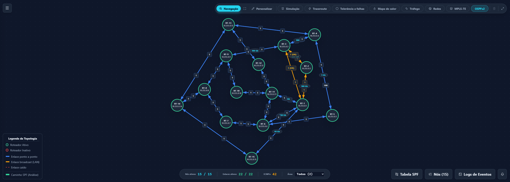

O Netlys desenha o mapa da sua rede OSPF em tempo real, mostra por onde o tráfego passa e deixa você testar mudanças e falhas antes de mexer em produção.

Quando algo muda, a resposta costuma estar espalhada em dezenas de roteadores e em diagramas que ninguém atualiza.
Desenhos feitos à mão não acompanham a rede. Na hora do incidente, ninguém confia neles.
Sem uma visão clara, a resposta depende da experiência de alguém, ou de descobrir na prática.
Sem histórico, cada pós-mortem vira investigação. E o tráfego já mudou de caminho sem ninguém ver.
O Netlys lê a própria rede e transforma tudo isso em um mapa vivo, com histórico, análises e simulações. Uma única fonte da verdade para todo o time.
Tudo o que o seu time precisa para operar a rede com segurança, em uma tela só.
O mapa real da rede, desenhado sozinho e atualizado a cada 3 segundos. Ideal para o telão do NOC.
Teste uma mudança ou uma falha numa cópia da rede e veja o resultado antes de mexer de verdade.
Por onde o tráfego passa, onde estão os pontos frágeis e quais enlaces estão sobrecarregados.
Alertas na hora, histórico completo para auditoria e configurações prontas para o seu fabricante.
Vai ajustar um custo ou fazer uma manutenção? Faça primeiro no Netlys. Ele congela uma cópia da rede e mostra o novo caminho do tráfego, sem tocar na rede real.
Cada mudança vira um registro. Escolha um momento na linha do tempo e o mapa mostra a rede exatamente como estava, para entender incidentes sem adivinhação.
Arraste, organize em anel, estrela ou camadas, ou deixe o Netlys achar o desenho mais limpo.
Escolha origem e destino e veja todos os caminhos possíveis, destacados no mapa.
Pontos únicos de falha em vermelho e, ao passar o mouse, quem ficaria isolado.
Enlaces do verde ao vermelho conforme a carga, para planejar capacidade com antecedência.
Quanto está passando em cada enlace agora, com alerta de ocupação por cor.
Monte caminhos clicando no mapa e receba os comandos prontos para o seu fabricante.
Tela cheia, limpa e legível de longe, atualizando sozinha o tempo todo.
Aponta ida e volta diferentes, enlaces ociosos ou sobrecarregados e caminhos redundantes.
Perfis de acesso para leitura e administração, com registro de tudo o que foi feito.
Sem agentes, sem mudar a configuração dos seus equipamentos e sem interferir no tráfego. O Netlys só observa.
Um instalador guiado faz as perguntas e sobe tudo sozinho. Seus dados ficam com você, no seu ambiente.
Basta uma conexão com um único roteador da rede. A partir dele, o Netlys enxerga toda a área.
Em minutos, o mapa aparece completo. Dê nomes aos equipamentos, organize e compartilhe com o time.
O Netlys fala o protocolo padrão do mercado. Se o seu equipamento roda OSPF, ele aparece no mapa, em IPv4 e IPv6.
Visão completa do backbone, planejamento de capacidade e menos tempo parado em incidentes.
Um mapa confiável no telão, alertas imediatos e histórico para entender o que aconteceu.
Simulações, análise de caminhos e MPLS-TE para planejar mudanças com segurança.
Todos os planos incluem todos os recursos. Você só escolhe por quanto tempo.
Instale na sua rede e veja o resultado com seus próprios dados.
Licença por instalação, com o período que fizer sentido para você.
Para quem quer resolver de uma vez e não pensar em renovação.
Não. O Netlys roda em uma máquina virtual sua e se conecta a apenas um roteador da rede, como se fosse mais um vizinho. Nenhum software é instalado nos equipamentos.
Não. Ele apenas observa e não anuncia rotas de produção. As simulações acontecem em uma cópia da topologia, sem enviar nada aos roteadores.
Se o equipamento usa OSPF, funciona. Cisco, Juniper, Huawei, MikroTik, Datacom, Nokia e outros aparecem lado a lado no mesmo mapa, em IPv4 e IPv6.
No seu ambiente. O Netlys é instalado na sua infraestrutura, e nenhuma informação da rede é enviada para fora.
A tela continua mostrando a última topologia conhecida, e as simulações e análises seguem funcionando até a conexão voltar.
Sim. Agende uma demonstração ao vivo ou peça o teste de 15 dias. Também há um modo de demonstração com uma rede de exemplo, que não precisa de roteador.
Conte um pouco sobre a sua operação. Respondemos com uma demonstração ao vivo ou com a licença de teste para você instalar.